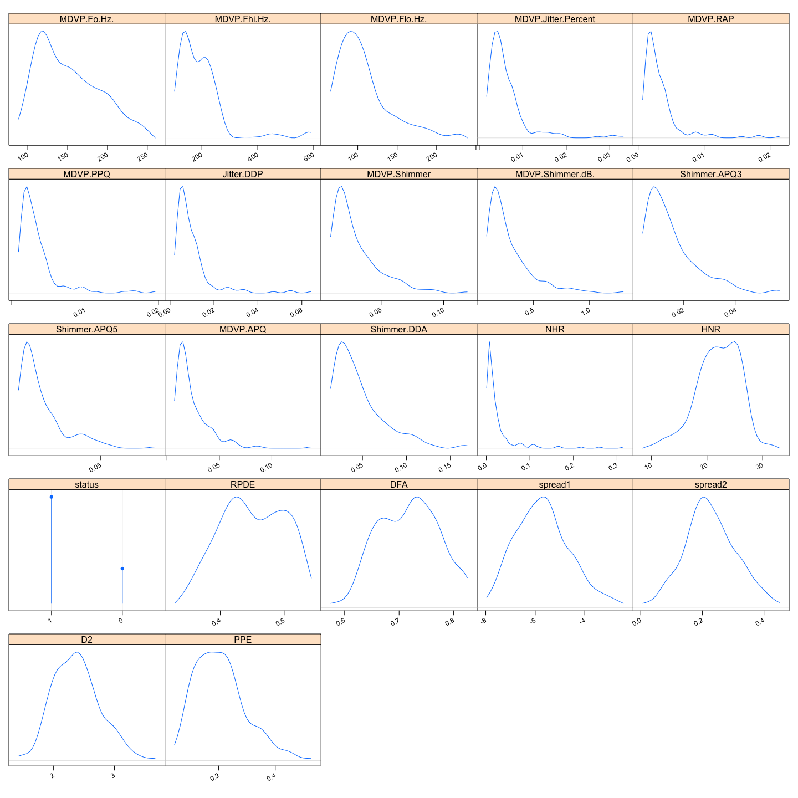

## Loading required package: RColorBrewerЗагружаем наши данные и подготавливаем их. Убирает Jitter.Abs (с ним не работает lda, да и он не нужен - есть Jitter.Percent)
df <- read.csv("data/parkinsons.csv", comment.char = "#")
df$name <- NULL
df$MDVP.Jitter.Abs. <- NULL
names(df)[names(df) == 'MDVP.Jitter...'] <- 'MDVP.Jitter.Percent'
summary(df)## MDVP.Fo.Hz. MDVP.Fhi.Hz. MDVP.Flo.Hz. MDVP.Jitter.Percent
## Min. : 88.33 Min. :102.1 Min. : 65.48 Min. :0.001680
## 1st Qu.:117.57 1st Qu.:134.9 1st Qu.: 84.29 1st Qu.:0.003460
## Median :148.79 Median :175.8 Median :104.31 Median :0.004940
## Mean :154.23 Mean :197.1 Mean :116.32 Mean :0.006220
## 3rd Qu.:182.77 3rd Qu.:224.2 3rd Qu.:140.02 3rd Qu.:0.007365
## Max. :260.11 Max. :592.0 Max. :239.17 Max. :0.033160
## MDVP.RAP MDVP.PPQ Jitter.DDP
## Min. :0.000680 Min. :0.000920 Min. :0.002040
## 1st Qu.:0.001660 1st Qu.:0.001860 1st Qu.:0.004985
## Median :0.002500 Median :0.002690 Median :0.007490
## Mean :0.003306 Mean :0.003446 Mean :0.009920
## 3rd Qu.:0.003835 3rd Qu.:0.003955 3rd Qu.:0.011505
## Max. :0.021440 Max. :0.019580 Max. :0.064330
## MDVP.Shimmer MDVP.Shimmer.dB. Shimmer.APQ3 Shimmer.APQ5
## Min. :0.00954 Min. :0.0850 Min. :0.004550 Min. :0.00570
## 1st Qu.:0.01650 1st Qu.:0.1485 1st Qu.:0.008245 1st Qu.:0.00958
## Median :0.02297 Median :0.2210 Median :0.012790 Median :0.01347
## Mean :0.02971 Mean :0.2823 Mean :0.015664 Mean :0.01788
## 3rd Qu.:0.03789 3rd Qu.:0.3500 3rd Qu.:0.020265 3rd Qu.:0.02238
## Max. :0.11908 Max. :1.3020 Max. :0.056470 Max. :0.07940
## MDVP.APQ Shimmer.DDA NHR HNR
## Min. :0.00719 Min. :0.01364 Min. :0.000650 Min. : 8.441
## 1st Qu.:0.01308 1st Qu.:0.02474 1st Qu.:0.005925 1st Qu.:19.198
## Median :0.01826 Median :0.03836 Median :0.011660 Median :22.085
## Mean :0.02408 Mean :0.04699 Mean :0.024847 Mean :21.886
## 3rd Qu.:0.02940 3rd Qu.:0.06080 3rd Qu.:0.025640 3rd Qu.:25.076
## Max. :0.13778 Max. :0.16942 Max. :0.314820 Max. :33.047
## status RPDE DFA spread1
## Min. :0.0000 Min. :0.2566 Min. :0.5743 Min. :-7.965
## 1st Qu.:1.0000 1st Qu.:0.4213 1st Qu.:0.6748 1st Qu.:-6.450
## Median :1.0000 Median :0.4960 Median :0.7223 Median :-5.721
## Mean :0.7538 Mean :0.4985 Mean :0.7181 Mean :-5.684
## 3rd Qu.:1.0000 3rd Qu.:0.5876 3rd Qu.:0.7619 3rd Qu.:-5.046
## Max. :1.0000 Max. :0.6852 Max. :0.8253 Max. :-2.434
## spread2 D2 PPE
## Min. :0.006274 Min. :1.423 Min. :0.04454
## 1st Qu.:0.174350 1st Qu.:2.099 1st Qu.:0.13745
## Median :0.218885 Median :2.362 Median :0.19405
## Mean :0.226510 Mean :2.382 Mean :0.20655
## 3rd Qu.:0.279234 3rd Qu.:2.636 3rd Qu.:0.25298
## Max. :0.450493 Max. :3.671 Max. :0.52737Построим всякие графики:
corrplot.mixed(cor(df), tl.cex=1.0)df$status <- as.factor(df$status)
marginal.plot(df) Очень много коррелирующих признаков.
Поделим выборку на обучающую и тестовую в отношении 2/1:
train.idx <- sample(nrow(df), size = nrow(df) * 0.6666)
df.train <- df[train.idx, ]
df.test <- df[-train.idx, ]Установим функцию тестирования нашей модели (10-fold cross validation) и проверим test-train (выведем относительную ошибку)
check.testTrain.lda <- function(f) {
m.predicted <- predict(lda(f, data = df.train), df.test)
print(table(m.predicted$class, df.test$status))
mean(m.predicted$class != df.test$status)
}
check.lda = function(f) {
print(lda(f, df))
t <- tune(lda, f, data = df, predict.func = function(...) predict(...)$class)
print(check.testTrain.lda(f))
t
}
check.lda(status ~ .)## Call:
## lda(f, data = df)
##
## Prior probabilities of groups:
## 0 1
## 0.2461538 0.7538462
##
## Group means:
## MDVP.Fo.Hz. MDVP.Fhi.Hz. MDVP.Flo.Hz. MDVP.Jitter.Percent MDVP.RAP
## 0 181.9378 223.6368 145.2073 0.003866042 0.001925000
## 1 145.1808 188.4415 106.8936 0.006989252 0.003757483
## MDVP.PPQ Jitter.DDP MDVP.Shimmer MDVP.Shimmer.dB. Shimmer.APQ3
## 0 0.002056042 0.005776042 0.01761521 0.1629583 0.009503542
## 1 0.003900340 0.011273061 0.03365816 0.3212041 0.017675782
## Shimmer.APQ5 MDVP.APQ Shimmer.DDA NHR HNR RPDE
## 0 0.01050854 0.01330479 0.02851146 0.01148271 24.67875 0.4425519
## 1 0.02028469 0.02760041 0.05302728 0.02921095 20.97405 0.5168159
## DFA spread1 spread2 D2 PPE
## 0 0.6957156 -6.759264 0.1602920 2.154491 0.1230171
## 1 0.7254079 -5.333420 0.2481327 2.456058 0.2338282
##
## Coefficients of linear discriminants:
## LD1
## MDVP.Fo.Hz. -7.693749e-03
## MDVP.Fhi.Hz. -4.269252e-04
## MDVP.Flo.Hz. -7.631760e-03
## MDVP.Jitter.Percent -9.181620e+02
## MDVP.RAP -4.631952e+03
## MDVP.PPQ -1.186609e+02
## Jitter.DDP 2.025883e+03
## MDVP.Shimmer 1.035992e+02
## MDVP.Shimmer.dB. 2.814860e+00
## Shimmer.APQ3 -1.052820e+03
## Shimmer.APQ5 -1.286528e+02
## MDVP.APQ 4.882119e+00
## Shimmer.DDA 3.267693e+02
## NHR -1.185143e+01
## HNR -8.131256e-02
## RPDE -4.908562e+00
## DFA 2.037708e+00
## spread1 6.432436e-01
## spread2 5.834174e+00
## D2 2.689727e-01
## PPE 4.445980e+00
##
## 0 1
## 0 11 6
## 1 5 44
## [1] 0.1666667##
## Error estimation of 'lda' using 10-fold cross validation: 0.1284211В принципе, не так уж и плохо.
Снова тестовая функция:
check.testTrain.nb = function(f) {
m.predicted <- predict(naiveBayes(f, data = df.train), df.test)
print(table(m.predicted, df.test$status))
mean(m.predicted != df.test$status)
}
check.nb = function(f) {
print(naiveBayes(f, df))
t <- tune(naiveBayes, f, data = df)
print(check.testTrain.nb(f))
t
}
check.nb(status ~ .)##
## Naive Bayes Classifier for Discrete Predictors
##
## Call:
## naiveBayes.default(x = X, y = Y, laplace = laplace)
##
## A-priori probabilities:
## Y
## 0 1
## 0.2461538 0.7538462
##
## Conditional probabilities:
## MDVP.Fo.Hz.
## Y [,1] [,2]
## 0 181.9378 52.73107
## 1 145.1808 32.34805
##
## MDVP.Fhi.Hz.
## Y [,1] [,2]
## 0 223.6368 96.72707
## 1 188.4415 88.33918
##
## MDVP.Flo.Hz.
## Y [,1] [,2]
## 0 145.2073 58.75707
## 1 106.8936 32.27436
##
## MDVP.Jitter.Percent
## Y [,1] [,2]
## 0 0.003866042 0.002054623
## 1 0.006989252 0.005239787
##
## MDVP.RAP
## Y [,1] [,2]
## 0 0.001925000 0.00106618
## 1 0.003757483 0.00324117
##
## MDVP.PPQ
## Y [,1] [,2]
## 0 0.002056042 0.0009432645
## 1 0.003900340 0.0029975114
##
## Jitter.DDP
## Y [,1] [,2]
## 0 0.005776042 0.003199365
## 1 0.011273061 0.009723507
##
## MDVP.Shimmer
## Y [,1] [,2]
## 0 0.01761521 0.005544432
## 1 0.03365816 0.019970079
##
## MDVP.Shimmer.dB.
## Y [,1] [,2]
## 0 0.1629583 0.05782216
## 1 0.3212041 0.20779837
##
## Shimmer.APQ3
## Y [,1] [,2]
## 0 0.009503542 0.003456032
## 1 0.017675782 0.010797271
##
## Shimmer.APQ5
## Y [,1] [,2]
## 0 0.01050854 0.003231086
## 1 0.02028469 0.012847239
##
## MDVP.APQ
## Y [,1] [,2]
## 0 0.01330479 0.003825123
## 1 0.02760041 0.018062427
##
## Shimmer.DDA
## Y [,1] [,2]
## 0 0.02851146 0.01036848
## 1 0.05302728 0.03239149
##
## NHR
## Y [,1] [,2]
## 0 0.01148271 0.01908841
## 1 0.02921095 0.04444718
##
## HNR
## Y [,1] [,2]
## 0 24.67875 3.434540
## 1 20.97405 4.339143
##
## RPDE
## Y [,1] [,2]
## 0 0.4425519 0.09219903
## 1 0.5168159 0.10125440
##
## DFA
## Y [,1] [,2]
## 0 0.6957156 0.05134600
## 1 0.7254079 0.05478635
##
## spread1
## Y [,1] [,2]
## 0 -6.759264 0.6427817
## 1 -5.333420 0.9707923
##
## spread2
## Y [,1] [,2]
## 0 0.1602920 0.06298227
## 1 0.2481327 0.07780936
##
## D2
## Y [,1] [,2]
## 0 2.154491 0.3102688
## 1 2.456058 0.3757417
##
## PPE
## Y [,1] [,2]
## 0 0.1230171 0.04481985
## 1 0.2338282 0.08427127
##
##
## m.predicted 0 1
## 0 14 23
## 1 2 27
## [1] 0.3787879##
## Error estimation of 'naiveBayes' using 10-fold cross validation: 0.2976316Тут уже сильно хуже, почти в 2 раза.
Снова тестовые фукнции (trace выключен)
check.testTrain.mr = function(f) {
m.predicted <- predict(multinom(f, df.train, maxit = 3000, trace=FALSE), df.test)
print(table(m.predicted, df.test$status))
mean(m.predicted != df.test$status)
}
check.mr = function(f) {
(mr <- multinom(f, df, maxit = 3000, trace=FALSE))
t <- tune(multinom, f, data = df, maxit=3000, trace=FALSE)
print(check.testTrain.mr(f))
t
}
check.mr(status ~ .)##
## m.predicted 0 1
## 0 12 8
## 1 4 42
## [1] 0.1818182##
## Error estimation of 'multinom' using 10-fold cross validation: 0.1539474Чуть хуже, чем LDA.
В одной из домашней работ (seeds) я забыл применить тут AIC/stepAIC, исправляю. В семенах все аналогично…
mnr <- multinom(status ~ ., df, maxit=3000, trace=FALSE)
mnr.aic <- stepAIC(mnr, trace=FALSE)
(mnr.aic.formula <- mnr.aic$call$formula)## status ~ MDVP.Fo.Hz. + MDVP.Fhi.Hz. + MDVP.Flo.Hz. + MDVP.Jitter.Percent +
## MDVP.RAP + MDVP.PPQ + Jitter.DDP + MDVP.Shimmer + MDVP.Shimmer.dB. +
## Shimmer.APQ3 + Shimmer.APQ5 + MDVP.APQ + Shimmer.DDA + NHR +
## HNR + RPDE + DFA + spread1 + spread2 + PPEПробуем на получившейся формуле multinomial:
check.mr(mnr.aic.formula)##
## m.predicted 0 1
## 0 12 9
## 1 4 41
## [1] 0.1969697##
## Error estimation of 'multinom' using 10-fold cross validation: 0.1444737Неплохо, улучшилось, стало как у lda.
Теперь сгруппируем данные. Написано в документации, что каждая строчка представляет собой записи 31 пациента и имя пациента есть подстрока вида R01_S_XX_1..6, где XX - собственно “имя” человека. Это и надо выцепить.
df <- read.csv("data/parkinsons.csv", comment.char = "#")
df$MDVP.Jitter.Abs. <- NULL
names(df)[names(df) == 'MDVP.Jitter...'] <- 'MDVP.Jitter.Percent'
df$name <- substring(df$name, 10, 12)
df <- aggregate(subset(df, select = c(-name, -status)), list(df$name, df$status), mean)
df$Group.1 <- NULL
names(df)[1] = "status"
df$status <- as.factor(df$status)Пациентов получилось, к слову, 32. В данных ошибка (опечатка?) :-)
Далее повторяем то же самое.
train.idx <- sample(nrow(df), size = nrow(df) * 0.6666)
df.train <- df[train.idx, ]
df.test <- df[-train.idx, ]LDA
check.lda(status ~ .)## Warning in lda.default(x, grouping, ...): variables are collinear## Call:
## lda(f, data = df)
##
## Prior probabilities of groups:
## 0 1
## 0.25 0.75
##
## Group means:
## MDVP.Fo.Hz. MDVP.Fhi.Hz. MDVP.Flo.Hz. MDVP.Jitter.Percent MDVP.RAP
## 0 181.9378 223.6368 145.2073 0.003866042 0.001925000
## 1 144.4983 186.3198 106.6283 0.006918988 0.003719008
## MDVP.PPQ Jitter.DDP MDVP.Shimmer MDVP.Shimmer.dB. Shimmer.APQ3
## 0 0.002056042 0.005776042 0.01761521 0.1629583 0.009503542
## 1 0.003856875 0.011157688 0.03334468 0.3173343 0.017534196
## Shimmer.APQ5 MDVP.APQ Shimmer.DDA NHR HNR RPDE
## 0 0.01050854 0.01330479 0.02851146 0.01148271 24.67875 0.4425519
## 1 0.02006595 0.02724952 0.05260252 0.02853659 21.05392 0.5165815
## DFA spread1 spread2 D2 PPE
## 0 0.6957156 -6.759264 0.1602920 2.154491 0.1230171
## 1 0.7255489 -5.345572 0.2462339 2.444378 0.2327578
##
## Coefficients of linear discriminants:
## LD1
## MDVP.Fo.Hz. 1.451462e-02
## MDVP.Fhi.Hz. -6.871145e-03
## MDVP.Flo.Hz. -2.183071e-02
## MDVP.Jitter.Percent -2.204029e+03
## MDVP.RAP -1.568977e+05
## MDVP.PPQ 7.795475e+02
## Jitter.DDP 5.311099e+04
## MDVP.Shimmer 1.850711e+02
## MDVP.Shimmer.dB. 2.050983e+01
## Shimmer.APQ3 -6.256406e+03
## Shimmer.APQ5 -4.849205e+02
## MDVP.APQ -7.707735e+01
## Shimmer.DDA 2.098261e+03
## NHR -1.246570e+01
## HNR 2.045922e-01
## RPDE -3.756558e+00
## DFA 5.380640e+00
## spread1 1.209015e+00
## spread2 5.232681e+00
## D2 2.346455e+00
## PPE 1.453406e+01## Warning in lda.default(x, grouping, ...): variables are collinear## Warning in lda.default(x, grouping, ...): variables are collinear## Warning in lda.default(x, grouping, ...): variables are collinear## Warning in lda.default(x, grouping, ...): variables are collinear## Warning in lda.default(x, grouping, ...): variables are collinear## Warning in lda.default(x, grouping, ...): variables are collinear## Warning in lda.default(x, grouping, ...): variables are collinear## Warning in lda.default(x, grouping, ...): variables are collinear## Warning in lda.default(x, grouping, ...): variables are collinear## Warning in lda.default(x, grouping, ...): variables are collinear## Warning in lda.default(x, grouping, ...): variables are collinear## Warning in lda.default(x, grouping, ...): variables are collinear##
## 0 1
## 0 1 4
## 1 0 6
## [1] 0.3636364##
## Error estimation of 'lda' using 10-fold cross validation: 0.3416667Naive Bayes
check.nb(status ~ .)##
## Naive Bayes Classifier for Discrete Predictors
##
## Call:
## naiveBayes.default(x = X, y = Y, laplace = laplace)
##
## A-priori probabilities:
## Y
## 0 1
## 0.25 0.75
##
## Conditional probabilities:
## MDVP.Fo.Hz.
## Y [,1] [,2]
## 0 181.9378 54.8830
## 1 144.4983 31.2676
##
## MDVP.Fhi.Hz.
## Y [,1] [,2]
## 0 223.6368 63.21432
## 1 186.3198 61.07550
##
## MDVP.Flo.Hz.
## Y [,1] [,2]
## 0 145.2073 52.68624
## 1 106.6283 25.98548
##
## MDVP.Jitter.Percent
## Y [,1] [,2]
## 0 0.003866042 0.001674063
## 1 0.006918988 0.004607525
##
## MDVP.RAP
## Y [,1] [,2]
## 0 0.001925000 0.0009012165
## 1 0.003719008 0.0028397882
##
## MDVP.PPQ
## Y [,1] [,2]
## 0 0.002056042 0.000787822
## 1 0.003856875 0.002648928
##
## Jitter.DDP
## Y [,1] [,2]
## 0 0.005776042 0.002704843
## 1 0.011157688 0.008518429
##
## MDVP.Shimmer
## Y [,1] [,2]
## 0 0.01761521 0.004668027
## 1 0.03334468 0.017397151
##
## MDVP.Shimmer.dB.
## Y [,1] [,2]
## 0 0.1629583 0.05147158
## 1 0.3173343 0.18069540
##
## Shimmer.APQ3
## Y [,1] [,2]
## 0 0.009503542 0.002985574
## 1 0.017534196 0.009284962
##
## Shimmer.APQ5
## Y [,1] [,2]
## 0 0.01050854 0.002650412
## 1 0.02006595 0.011391795
##
## MDVP.APQ
## Y [,1] [,2]
## 0 0.01330479 0.003224001
## 1 0.02724952 0.015841239
##
## Shimmer.DDA
## Y [,1] [,2]
## 0 0.02851146 0.008957561
## 1 0.05260252 0.027854722
##
## NHR
## Y [,1] [,2]
## 0 0.01148271 0.01667110
## 1 0.02853659 0.03850907
##
## HNR
## Y [,1] [,2]
## 0 24.67875 3.375672
## 1 21.05392 4.089865
##
## RPDE
## Y [,1] [,2]
## 0 0.4425519 0.07843296
## 1 0.5165815 0.09517468
##
## DFA
## Y [,1] [,2]
## 0 0.6957156 0.05181859
## 1 0.7255489 0.05324560
##
## spread1
## Y [,1] [,2]
## 0 -6.759264 0.5637015
## 1 -5.345572 0.8058056
##
## spread2
## Y [,1] [,2]
## 0 0.1602920 0.05768190
## 1 0.2462339 0.06010066
##
## D2
## Y [,1] [,2]
## 0 2.154491 0.2230708
## 1 2.444378 0.3130203
##
## PPE
## Y [,1] [,2]
## 0 0.1230171 0.03806431
## 1 0.2327578 0.07178863
##
##
## m.predicted 0 1
## 0 1 3
## 1 0 7
## [1] 0.2727273##
## Error estimation of 'naiveBayes' using 10-fold cross validation: 0.2583333Multinomial
check.mr(status ~ .)##
## m.predicted 0 1
## 0 1 2
## 1 0 8
## [1] 0.1818182##
## Error estimation of 'multinom' using 10-fold cross validation: 0.3166667Вот тут совсем хорошо (иногда! данных очень мало!) расклассифицировал пациентов. И проверим еще stepAIC:
mnr.grouped <- multinom(status ~ ., df, maxit=3000, trace=FALSE)
mnr.aic.grouped <- stepAIC(mnr.grouped, trace=FALSE)
(mnr.aic.formula.grouped <- mnr.aic.grouped$call$formula)## status ~ MDVP.Fhi.Hz. + MDVP.Shimmer.dB. + Shimmer.APQ5 + NHR +
## HNR + DFA + spread1 + D2check.mr(mnr.aic.formula.grouped)##
## m.predicted 0 1
## 0 0 3
## 1 1 7
## [1] 0.3636364##
## Error estimation of 'multinom' using 10-fold cross validation: 0.2666667В этот раз stepAIC очень сильно нам помог: модель резко упростилась: с 22 до 8 предикторов, ошибка тоже уменьшилась (опять же от запуска к запуску)